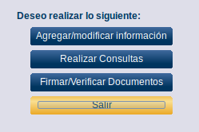
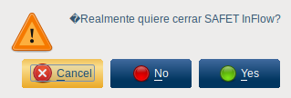
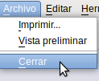
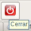

12.6.- Módulo Salir
Para acceder a este módulo se hace click en el botón Salir (ver figura S3.4-1)

Figura S3.4-1. selección del botón Salir
Y se desplegara una ventana (ver figura S3.4-2) donde preguntara si realmente quiere cerrar SAFET inflow

Figura S3.4-2. Ventana Salir
Existen otras manera para cerrar la aplicación SAFET inflow:
-
Dandole click al botón "Archivo" que se encuentra en la barra de la parte superior izquierda de las ventanas de la aplicación inflow (ver figura S3.4-3)
-
O Dandole clic al Boton "Cerrar" (Ver figura S3.4-4)

Figura S3.4-3. ventana Salir

Figura S3.4-4. Botón Cerrar